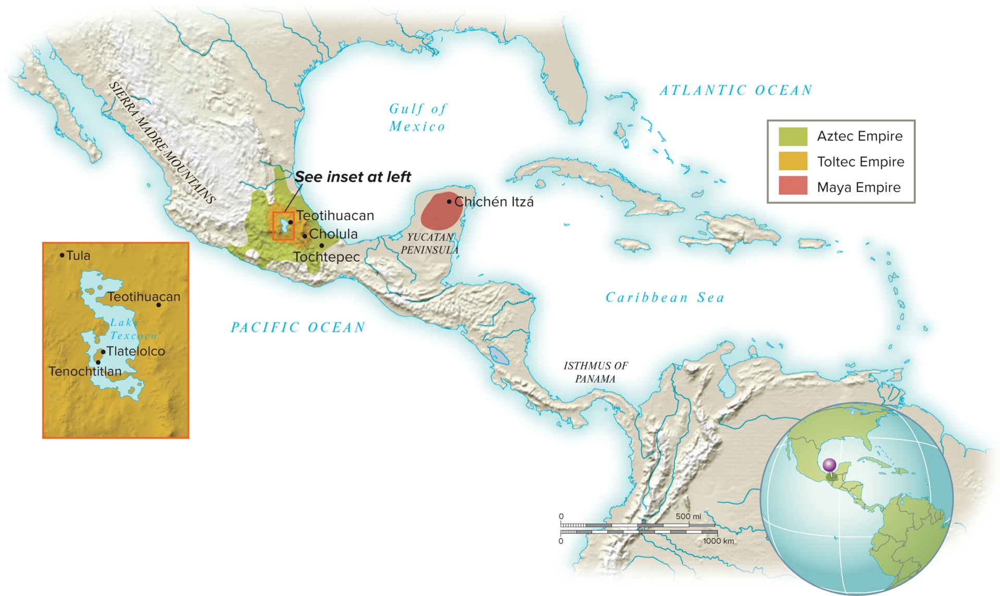

Where in the World
Two regions, two solutions


Key Takeaway
Same problem, different geography: how do you govern people you cannot quickly reach?
How They Fed the City
Chinampas: farming the lake
- Raised fields built up from the lakebed
- Layered mud, reeds, and staked willow trees
- Watered on all four sides, at once
Key Takeaway
Chinampas turned a lake into farmland, and farmland into a capital.

Religion and the State
Time, temple, and tribute
%20Tenochtitl%C3%A1n%2C%201375-1520.png)
The empire's ceremonial center
A 260-day ritual cycle, a 365-day solar year
War, sacrifice, and tribute, justifying each other
Key Takeaway
Religion was not separate from Mexica power. It was how power was justified.
Who Ruled
The Sapa Inca: son of the sun
,_1615.jpg)
Believed to descend from Inti, the sun
Began the empire's expansion, c. 1438
Same claim as Angkor's devaraja
Key Takeaway
Divine kingship was not unique to the Khmer. The Inca built one too.
Case Four · The Sacred Landscape
Machu Picchu: a royal estate in the clouds

Built c. 1450
Likely a royal estate for Pachacuti, not a hidden capital. It was never lost, and the Spanish never found it.
Key Takeaway
Not a capital. A retreat, built high enough to answer to no one.
How They Kept Records
Quipu: recording without writing
- Knotted cords, not letters
- Tracked tribute, population, and labor
- Read by trained specialists, quipucamayocs
Key Takeaway
No alphabet. A full administrative record system anyway.

Diversity in North America
Three centers, one continent

Mississippi River
Cahokia
The largest city north of Mexico
.jpg)
The Southwest
Chaco Canyon
Trade and ceremony in the desert

Colorado
Mesa Verde
Cliff dwellings, engineered farming
Key Takeaway
Complex, organized societies were not limited to the Mexica or the Inca.